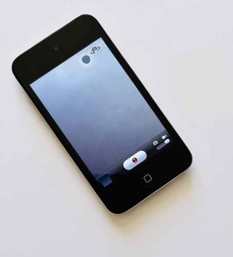

About Makurama
Makurama is a collection of changing video essays after Sei Shonagon: lists, small shocks, private pleasures, public irritations, and the way attention edits a day after the day has already passed.

The image begins with an old iPod. The device is small, tired, and faulty. Its origin is unknown - I bought it second hand for a more than decent price as a part of my upcycling strategy. The footage is edited into PAL, held in a 4:3 frame, and finished with hardcoded subtitles so the words become part of the image rather than a removable layer.
The sound is deliberately slight: chiptune, human voice, and occasional ambient concrete sound. A hallway, a train platform, a room tone, a tiny melody. Nothing is polished into distance.
This is open-source art. Here that means the website is not a sealed frame: the code, interface, documentation, and data schema can be read, reused, forked, and criticized. The apparatus remains visible.
The artworks themselves stay under a different care. Videos, voice, subtitles, images, and artistic data are licensed CC BY-NC-ND 4.0. Code, interface, documentation, and schema are open-source under the MIT License.